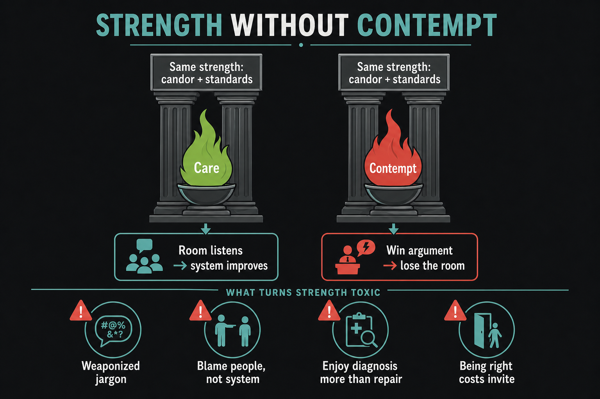

Strength without contempt: hate the org, lose the room
Source: Scrum.org (@Scrumdotorg) · Steven Deneir
original post
What it claims
A change agent running on contempt never improves the organization. Steven Deneir: the diagnosis can be flawless and still fail, because people will not take truth from someone who despises them. Strength is not the problem — the fuel is. Care and contempt look the same from outside (both confront); only care fixes. Signs fuel went bad: agile words as a stick, humans blamed instead of the system, thrill of proving dysfunction, being right while losing the invite.
Why it matters for a PO
POs live in hard stakeholder conversations. Same candor that protects a Product Goal can curdle into prosecution of “blockers.” When stakeholders become the enemy, you win small battles and never change the constraint. Outcome ownership means fighting the system with them, not against them.
3 takeaways
- Before you confront, finish: “We have to confront this because we care about ____.”
- Four fuel checks: weaponized jargon, person-blame, enjoy diagnosis > repair, right-but-uninvited.
- Ask: am I fixing the thing, or winning the moment?
Practice this week
Before your next pushback with a stakeholder or manager, write the care blank in one sentence (customer, outcome, craft). Deliver the hard truth with that sentence first. Afterward, score yourself: fixed something vs won the moment. If it was the moment, schedule one repair step that needs their help.